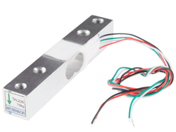
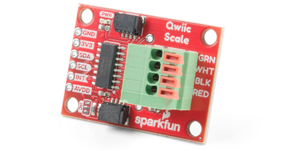
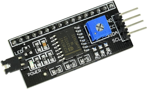
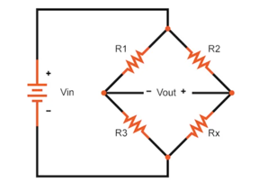
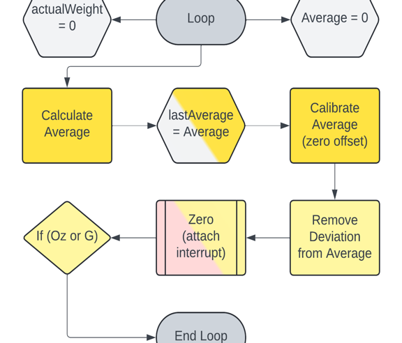
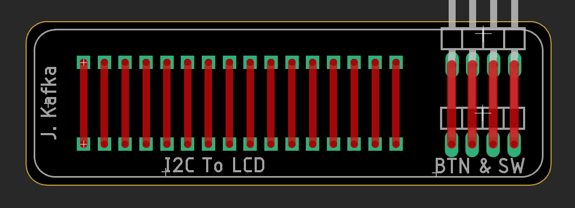

2024 · Embedded Sensor System
Arduino Load Cell Scale
Designed and built a digital scale using a 10 kg load cell, NAU7802 Qwiic scale amplifier/ADC, Arduino Nano, I2C LCD, user controls, PCB work, and a custom enclosure.

Video Demonstration
Working demonstration
The project video shows the physical build, behaviour, and final result.
 ▶ Watch on YouTube
▶ Watch on YouTube
Project Overview
Convert tiny mechanical deformation into a calibrated weight reading.
The project combined noisy sensor data, calibration, a tare/zero button, grams/ounces switching, LCD output, soldered electronics, and a mechanical enclosure.
What I built
- 10 kg load cell sensing platform
- NAU7802 ADC/amplifier interface
- Arduino averaging and tare logic
- I2C LCD display output
- Custom enclosure with controls and internal wiring
Technical Skills
Skills demonstrated
Sensor calibration
Applied directly in the design, build, debugging, or final integration of the project.
Interrupts
Applied directly in the design, build, debugging, or final integration of the project.
I2C devices
Applied directly in the design, build, debugging, or final integration of the project.
Mechanical packaging
Applied directly in the design, build, debugging, or final integration of the project.
Soldering and wiring
Applied directly in the design, build, debugging, or final integration of the project.
Build Story
Load cell hardware, signal conversion, and display PCB
PCB and wiring organization
The image to the right shows the NAU7802 Qwiic scale board, which converts the load cell’s analog signal into digital data for the Arduino.

Enclosure design
The image to the right shows the LCD I2C backpack, which lets the Arduino control the display using only the I2C data and clock lines.

Internal layout
The image to the right shows the Wheatstone bridge diagram used to explain how the load cell converts bending force into a changing electrical signal.

Finished scale
The image to the right shows the scale code flowchart, including averaging readings, zeroing the scale, removing small noise near zero, and switching between grams and ounces.

Prototype scale stand
The image to the right shows the custom PCB design used to connect the LCD backpack and organize the front-panel controls.
